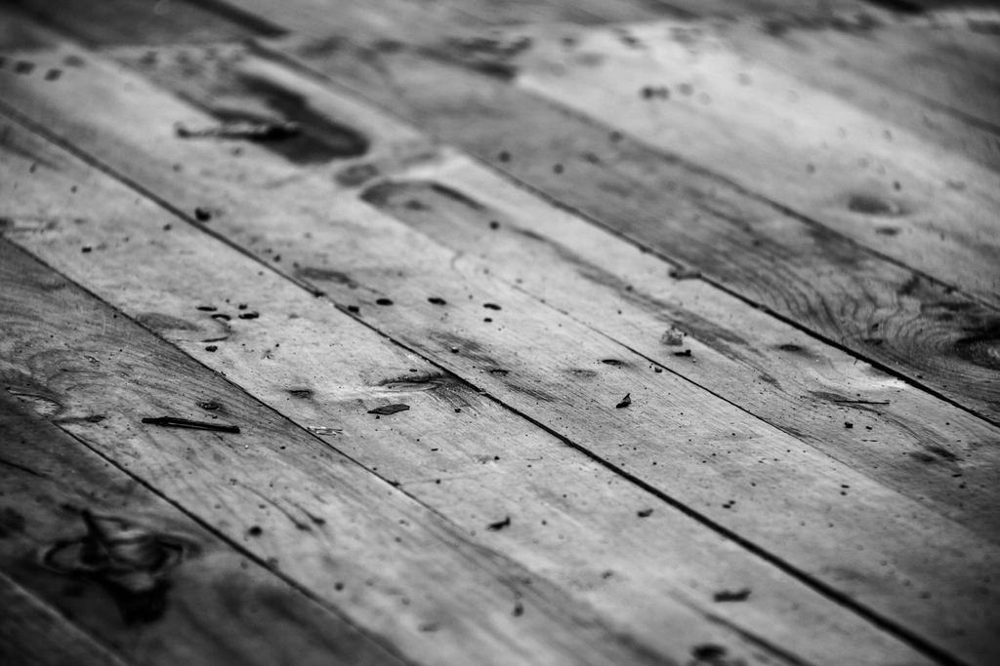

Referenser
Ett urval av uppdrag vi har utfört.
- 2026

Villa på Hosjö
Ramp på 4,8 meter vid altanen och tre trösklar borttagna.
- 2025

Lägenhet på Britsarvet
Klinker ersatt med halkskyddad matta och en duschplats i golvnivå.
- 2025

Radhus i Borlänge
Sju trösklar borta och kontrastlister i trappan till övervåningen.
- 2025

Seniorboende
Fastighetsägaren lät ta bort alla trösklar i ett trapphus inför inflyttningen.
- 2024

Fritidshus i Sundborn
Ramp i lärkträ från parkeringen till altanen för ett par där den ena använder rullstol.
- 2026

Lägenhet i Gruvriset
Kommunens beslut har kommit – arbetet görs vecka 48.
Kunderna om oss
Kunder och anhöriga
Kristina A. · Hosjö”Pappa vägrade flytta. Efter en dag med Lars och Ali kan han ta sig ut på altanen själv.”
Birgitta och Olle S. · Borlänge”Åsa hjälpte oss med ansökan. Beslutet kom efter fem veckor och arbetet gjordes veckan därpå.”
Mikael J. · Fastighetsägare, Säter”Trösklarna försvann i 24 lägenheter utan att någon boende behövde lämna sin lägenhet en enda dag.”